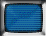
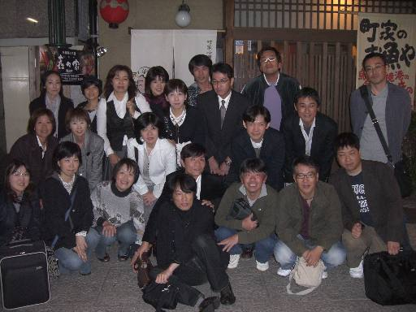
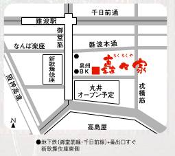

ようこそ！！
ここは布施高校 37期 3年1組 吉田学級クラスメイトの
限定ページで御座います！
Last Update;2019/11/04
** menu **
●Meetinng Room ⇒ LINE
LINEに移行しました!
LINEの「布施高校・吉田学級」ご参加くださいませ
●吉田学級同窓会 情報

☆2019年
卒業35周年記念同窓会 開催について！
無事終了しました！！
↓過去同窓会↓
☆2016年8月14日 大阪プチ同窓会 at 上六」
☆2015年7月10日 第3回プチ同窓会 in 東京
☆2014卒業30周年同窓会
開催されました！開催内容詳細
（↑クリック↑）
（開催前告示内容）
(↑クリック↑）
☆2008/11/01 同窓会
☆2003/08/16 同窓会
☆東京プチ同窓会
●過去の連絡事項類
●おまけ画像！
●名簿
**************************************


Meetinng Room ⇒ LINE
ミーティングルームは閉鎖し,
LINEに引き継いでます。
連絡頂ければ、友達登録後、
布施高校吉田学級というグループにご招待します。
スマホで、LINEしてるひと～！
まずは友達申請待ってます。
おもろくて、便利(#^.^#)
だいもんへの友達申請は・・・
スマホのLINE画面から
↓
| ①「その他」をタッチ |
| ②「友だち追加」をタッチ |
| ③「ID検索」をタッチ |
| ④検索バーで snafkin425 を入力し検索 |
| ⑤見つかったら「友達リストに追加」 |
| ⑥・・・返事あるまでお待ちください。 |
LINE今からの人～
まずはスマホにインストールからです。
分かりづらかったら聞いてな
よろしく～～
menuに戻る！
☆2019年 卒業35周年記念同窓会 開催について！
大盛況の中、終了しました！！！！
前日の大型台風21号の影響もあり、
東京組の全員不参加が危ぶまれましたが、
なんとか、来れる人もいて、よかったです。
増元、吉岡、はしけん、遠方ありがとう
久しぶりに、竹鼻や、松田の参加も嬉しかったです。！
画像、動画、編集中
以下、出席者一覧
| 連絡取れず | ||
| 連絡取れず | ||
以下、事前開催案内です。
残しておきます
ども。元気？
早いもんで、卒業して35年！時代も令和やな！
久しぶりにみんなで集まろうぜ！
●日時：令和元年10月13日(日)午後2時～午後5時
●場所：パーティースペース モリシタ
〒530-0003
大阪府大阪市北区堂島1-1-5
ザイマックス梅田新道ビル地下1階
TEL．06-6341-0244
http://www.restaurant-morishita.com/
●会費：5,500円
★二次会
一次会と同じ場所で開催することになりました！
一次会の流れで二次会になだれ込みま～す
●時間は午後5時～午後7時
●会費2500円です！！
よろしくお願いします！
参加希望の方、詳細問合わせは大門までメールで！
menuに戻る！

＜2014年 卒業30周年同窓会＞
無事終了しました！！！
内容は以下ページから！！！
また集まろう
開催されました！開催内容詳細
（↑クリック↑）
＜一次会＞
●日時：2014/11/23（日) 16:00～19:00
●場所：燦 ヒルトンプラザウエスト店
住所：大阪市北区梅田２‐２‐２ ヒルトンプラザウエスト６Ｆ
地下鉄四つ橋線西梅田駅徒歩1分/ 阪神梅田駅徒歩1分/JR大阪駅徒歩3分
電話：06-6345-8163
http://www.hotpepper.jp/strJ000014491/
http://r.gnavi.co.jp/k065420/
●会費：8000円（ちょっと高めの贅沢？コースにしました。(^。^)）
＜二次会＞
●日時：11/23（日) 19:30～（2時間くらいかな？）
●場所：総本家 竹取花めぐり 西梅田店
住所：大阪市北区梅田２-1-21レイズ梅田ビル4Ｆ
JR大阪駅 徒歩３分/北新地駅 徒歩3分/西梅田駅 徒歩１分/御堂筋線梅田駅 徒歩3分【大阪駅第1ビル向かい】
電話：06-6341-0275
http://gh.hotpepper.jp/strJ000744116/?vos=cpahppprosmaf121219002
●会費：3000円
☆特別企画：布施高校見学ツアー！！！
卒業30周年やし。。久しぶりに行ってみよーかと。。
懐かしで～。。どう？
参加します～って方、
同日11/23のお昼に集まるんで。。
●集合日時：11/23（日）14:00(厳守）
●集合場所：八戸ノ里駅前（改札出たとこらへん）
●会費：無料。。
＊出欠は取りませんので、勝手に来てください(^^)
＊この後に梅田の一次会場所に移動ということで～
日程調整よろしく～～
参加のご連絡は大門まで
出欠表！（141122現在）
| 一次会 | 二次会 | 備考 | |
| 大久保 | 出席 | 出席 | |
| 奥村 | ？ | ？ | |
| 金城 | 出席 | 出席 | |
| 木内 | 出席 | 出席 | |
| 佐伯 | 欠席 | 出席 | |
| 四位 | 欠席 | 欠席 | |
| 清水 | 出席 | 出席 | |
| 大門 | 出席 | 出席 | |
| 竹鼻 | 未送信 | 未送信 | 連絡先不明 |
| 田中 | 欠席 | 欠席 | |
| 谷口 | 欠席 | 出席 | |
| 寺井 | 出席 | 出席 | |
| 中井 | 出席 | 欠席 | |
| 西垣 | 出席 | 出席 | |
| 野谷 | 出席 | 出席 | |
| 橋本 | 出席 | 出席 | |
| 深江 | 未送信 | 未送信 | 連絡先不明 |
| 福田 | ？ | ？ | |
| 宮崎 | 欠席 | 欠席 | |
| 山田 | ？ | ？ | |
| 山本 | 欠席 | 欠席 | |
| 吉岡 | 出席 | 出席 | |
| 吉本 | 欠席 | 欠席 | |
| 渡辺 | 欠席 | 出席 | |
| 浅野 | 欠席 | 欠席 | |
| 伊沢 | 出席 | 欠席 | |
| 犬束 | 出席 | 欠席 | |
| 岩本 | 欠席 | 欠席 | |
| 金原 | 出席 | 欠席 | |
| 楠 | 欠席 | 欠席 | |
| 鹿野 | 欠席 | 欠席 | |
| 嶋野 | 出席 | 出席 | |
| 生島 | 出席 | 出席 | |
| 杉田 | 出席 | 欠席 | |
| 瀬戸 | 出席 | 欠席 | |
| 高本 | 出席 | 出席 | |
| 丹山 | 出席 | 欠席 | |
| 長村 | 出席 | 欠席 | |
| 西山 | 未送信 | 未送信 | 連絡先不明 |
| 野村 | 出席 | 欠席 | |
| 林 | ？ | ？ | |
| 東村 | 出席 | 出席 | |
| 増元 | 出席 | 出席 | |
| 松田 | 欠席 | 欠席 | |
| 松永 | 出席 | 欠席 | |
| 村上 | ？ | ？ | |
| 安田 | 欠席 | 欠席 |
不明な連絡先の人に連絡取れる人、情報ちょーだい！
すでに欠席連絡の人、予定変われば至急連絡くれたし！！
menuに戻る！
＜2008年 37期吉田学級同窓会について＞

08/11/1、無事終了しました！！！
心からタメではなせる友達ならではの盛り上がりでした。
楽しかったの～
また、集まろな～
以下に、そん時の画像、動画をアップしました！！
ご覧下さい。
↓
画像はこちら password：bemu3731
動画はこちら 限定公開設定
＊＊＊＊＊＊＊＊＊＊＊＊＊＊＊以下、案内時の内容です。＊＊＊＊＊＊＊＊＊＊＊＊＊＊＊
5年ぶりの同窓会です。
是非是非、お集まり下さい～～
<日時>
2008/11/1（土）
18：00～20：00
<場所>
難波です。
「町家居酒屋 矗々家（チクチクヤ）」 難波店
（↑ぐるナビクリック↑）
06-6649-1197
<会場地図>
場所は難波マルイの裏手

<会費>
5000円
飲み放題です。
（当日集めます）
問い合わせ
大門まで
09043307863
携帯メール
↓携帯版↓
開催内容
（携帯版には出欠状況も載せてます）
menuに戻る！
＜2003年 37期吉田学級同窓会について＞
2003年8月16日（土）に開催されました！！
開催内容 Photo＆Movie 吉田先生への記念品 同窓会当日、参加者全員が頂きました。
吉田先生からの頂き物
「おらが学校、布施高校」魂、健在です！
旧「2003年同窓会のページ」
＜布施高校同窓会報への2003/08の吉田学級同窓会記事＞
2004年春発行予定の布施高校同窓会報への
我がクラス2003年夏実施の同窓会記事です。
四位が書いてくれました！m(_ _)m
原稿↓PDF形式323K
http://park11.wakwak.com/~bassman/pass2/37yoshida_gumi.pdf
menuに戻る
＜吉田学級同窓会 in 東京＞
うちのクラスで関東方面すんでる人、結構多いんよ。。。
ということで、関東方面でもプチ同窓会やってま～す！
2003年9月6日 第１回プチ同窓会in東京
2006年5月13日 第２回プチ同窓会in東京
2015年7月10日 第3回プチ同窓会in東京
menuに戻る
＜卒業20周年記念・第二回オンライン同窓会実施＞
日時；2005/12/17（土） 22:00～
場所；Meeting Room（クリック！）
参加費；もち無料です。
どんな展開になるか？同窓会としてなりたつのか？予想つきません。(^^)/
そんなこんなですが、よろしくどうぞ。
＜以下は第一回です＞
2004年、本年は卒業20周年に当たります！
それを記念し、オンライン同窓会を実施します！！みなさんご参加下さい！！
日時；2004/10/16（土） 22:00～
場所；Meeting Room（クリック！）
＜生島からのアンケートの依頼です～＞
04/04/30をもちまして、
締め切らさせて頂きました！
ご協力頂いたみなさま、どうもありがとです。
menuに戻る！
＜おまけ画像のこ～な～＞
さてさてどんな画像が出てくるか？
ここをクリックやで！
menuに戻る！
＜名簿＞
↑クリック↑
お引っ越しやメールアドレスの変更の際は一報チョーダイな
menuに戻る！
menuに戻る！